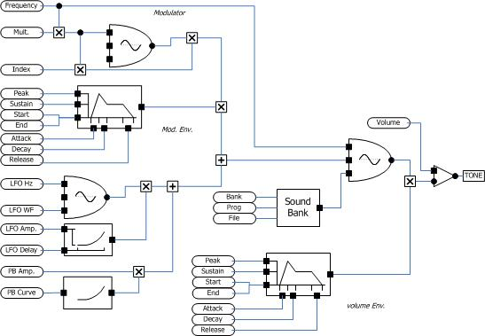

The SoundBank instrument provides playback of samples from sound banks (SF2 or DLS files). Unlike the GMPlayer instrument, this instrument uses only the sample data and ignores the articulation information (i.e., envelope and modulators). The envelope of the sound is controlled by parameters of the SoundBank instrument.
The following diagram shows the SoundBank object internal structure.
The following table shows the parameter ID numbers and the equivalent XML tag and attribute values for the SoundBank instrument.
Parameter |
Tag |
Attribute |
Name |
Use |
16 |
sf |
bank |
bank |
Bank number matching a bank number in the sound bank file. |
17 |
|
prog |
prog |
Program number (preset). This selects the instrument from the sound bank. |
18 |
|
mono |
monoSet |
Force mono playback even if the sound bank sample is multi-channel. |
44 |
|
fmcm |
fmcm |
Modulator frequency multiplier (i.e., C:M ratio). |
45 |
|
fmim |
fmim |
Modulator index of modulation.. |
20 |
venv |
st |
volStart |
Volume envelope start level. |
21 |
|
atk |
volAttack |
Volume envelope attack time. |
22 |
|
atk |
volAttack |
Volume envelope peak level. |
23 |
|
dec |
volDecay |
Volume envelope decay time. |
24 |
|
sus |
volSustain |
Volume envelope sustain level. |
25 |
|
rel |
volRelease |
Volume envelope release time. |
26 |
|
end |
volEnd |
Volume envelope end level. |
27 |
|
ty |
volType |
Volume envelope curve type. |
30 |
menv |
st |
modStart |
Modulator envelope start level. |
31 |
|
atk |
modAttack |
Modulator envelope attack time. |
32 |
|
atk |
modAttack |
Modulator envelope peak level. |
33 |
|
dec |
modDecay |
Modulator envelope decay time. |
34 |
|
sus |
modSustain |
Modulator envelope sustain level. |
35 |
|
rel |
modRelease |
Modulator envelope release time. |
36 |
|
end |
modEnd |
Modulator envelope end level. |
37 |
|
ty |
modType |
Modulator envelope curve type. |
40 |
vlfo |
atk |
vibLfoAttack |
Modulator envelope curve type. |
41 |
|
frq |
vibLfoFrq |
Vibrato frequency. |
42 |
|
amp |
vibLfoLevel |
Vibrato amplitude. |
43 |
|
ty |
vibLfoWT |
Vibrato wavetable. |
46 |
pb |
pbamp |
pbamp |
Pitch bend amplitude. |
48 |
pb |
pbwt |
pbwt |
Pitch bend wavetable. |
<instr id="" type="SoundBank" name="" desc="">
<gm local="1" vol="1.000000" pan="0.000000" bank="0" prog="0" flags="16375">
Soundbank Name
</gm>
<sf bank="0" prog="0" mono="0" fmcm="2.099000" fmim="0.260000">
<file>alias</file>
<instr>display name</instr>
</sf>
<venv st="0.000000" atk="0.330000" pk="1.000000" dec="0.000000" sus="1.000000" rel="0.400000" end="0.100000" ty="2" />
<menv st="0.000000" atk="0.389000" pk="1.000000" dec="1.549000" sus="0.480000" rel="0.619000" end="0.000000" ty="2" />
<vlfo frq="4.630000" wt="0" atk="1.039000" amp="0.070000" />
<pb pbamp="0.000000" pbwt="9" />
</instr>